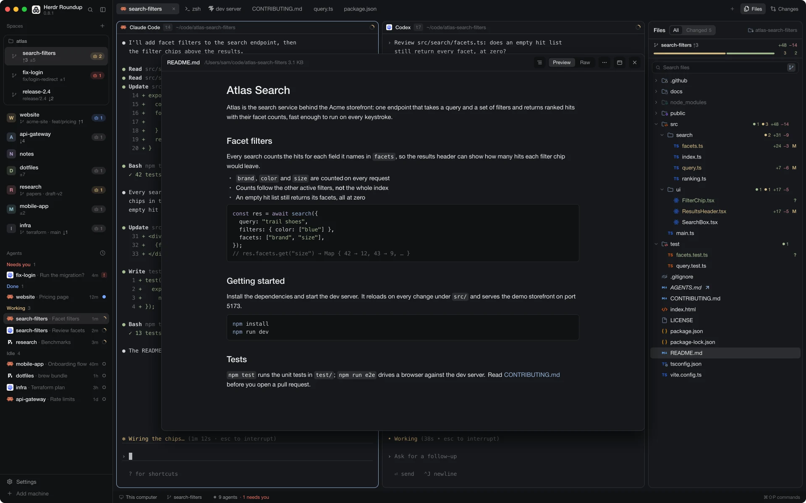
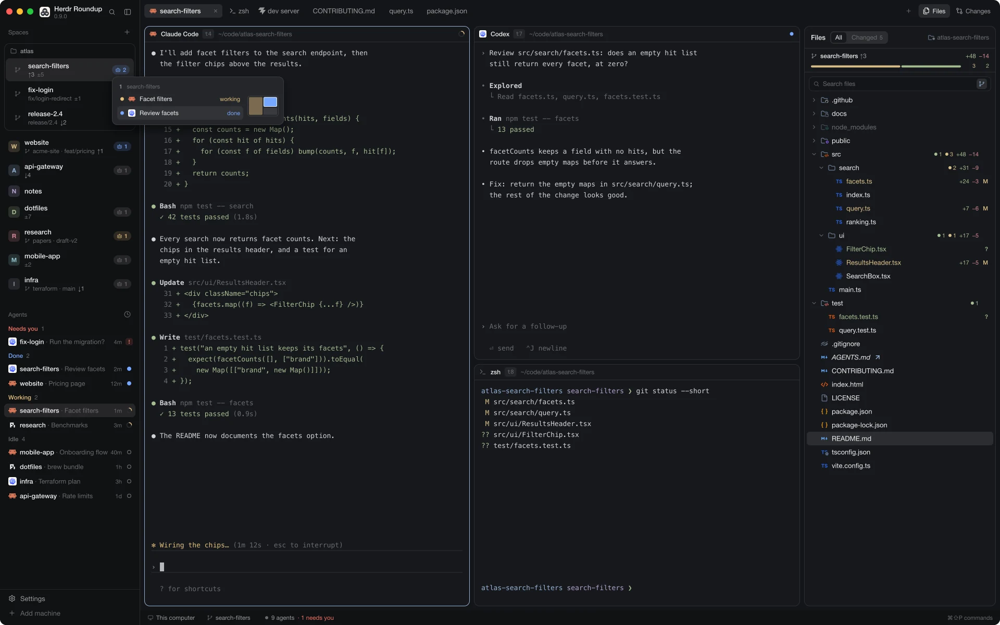
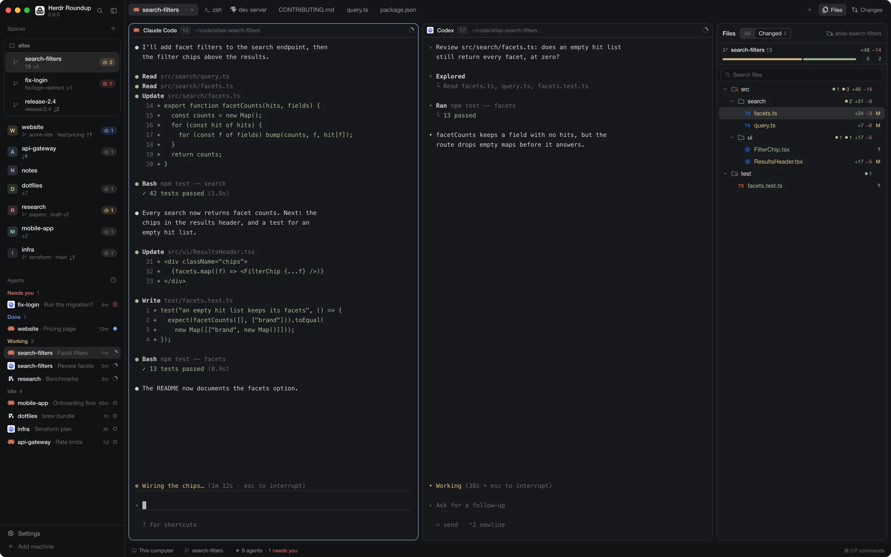
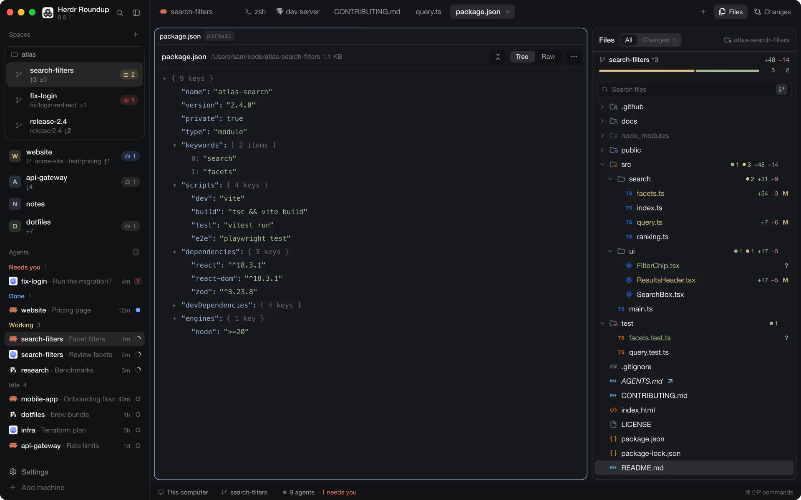
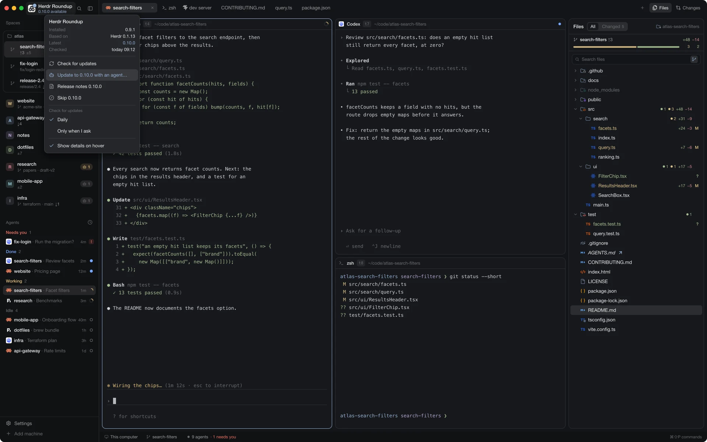

Herdr Roundup is a layout for Herdr App that gathers your herd in one window, quieter and more telling. Every space shows where its repo stands, files open in a real preview, panes carry names you give them, and a new release installs through your agent.





Herdr Roundup keeps the shape of Herdr's default layout: spaces and agents on the left, the tab's panes in the middle, a panel on the right. What changes is how much each part tells you, and how few clicks it takes to look closer.
Each space says where its repo stands, without opening it. Under the name: repo · branch, ↑ahead ↓behind and ±n uncommitted changes. A space on main under its repo's name keeps the line short.
The agent badge counts the agents in a space. It stays gray while all of them are idle; otherwise it takes the color of the most urgent one: blocked, done or working.
Worktrees of one repo share a card, under the repo's name, and you drag the card as one. The counts refresh after a commit, a checkout or an agent's turn, and when the window comes to the front.
With two or more agents in a space, rest the pointer on its badge: a card lists them by tab, each with its status, program and terminal title, beside a small map of the tab's panes, split as they are on screen. Point at a row and its pane lights up. A click on a row or an agent's pane goes there, switching space and tab; a click on the badge itself switches to the space.
The Files button at the right of the tab bar opens a panel on the focused pane's folder. Every row carries its git state: names in the color of their status, files ending in +N −N and their letter, folders with a count of new, modified and deleted files below them. Paths git ignores are dimmed.
The branch row on top shows the branch, ahead and behind, the lines changed and a bar of modified, new and deleted paths. Icons come from Symbols and look right in light and dark themes.
Arrows move and open folders, Space previews, Enter opens a tab, / searches, Esc backs out. The right-click menu (or the Menu key) opens, reveals, copies relative or absolute paths, or sends @path to the tab's agent.
Changed lists exactly what git status lists, deleted files included, as a tree with every folder open. The switch carries the count, so you see how much an agent touched before you look. A deleted file shows struck through; an untracked folder is one row that opens from disk.
Large repos stay fast: Changed shows the first 2,000 paths, and the panel says when it cuts a list short. Whether you look at All or Changed stays after a restart.
Search covers folders you haven't opened yet. By default it reads git's files, so node_modules and other ignored folders stay out; the switch at the end of the field searches the disk instead. Matches show as a tree, names that match first.
Symlinks are marked: the name in italics with a small arrow after it. Rest the pointer on the arrow and it says where the link points. A link whose target is missing has a dimmed name and a red arrow.
Double-click a file, or press Space, and it opens in a window over the layout. While the window is open it follows the selection in the files panel. Drag it by its header; it opens where you left it.
Cmd-double-click (Ctrl on Windows and Linux) or Enter opens the file in a tab of its own. A file that already has a tab brings that tab to the front. ⋯ opens it in your editor, with the default app, or reveals it.
A preview reloads when the file changes on disk, and a preview tab still shows its file after a restart.
Every pane has a header: the program's icon, the pane's name, the terminal's id in a small chip (t7), its folder and the agent's status. Double-click the chip to copy the id, handy when one agent should talk to another.
Give a pane a name of your own: double-click its name, or the pencil that appears on hover. The name stays with the terminal; an empty one goes back to the program's. On hover the header also splits, zooms and closes the pane.
You choose when closing a tab or a pane asks first: Never, While an agent works (the default) or Always. Tabs have the choice in their right-click menu, panes in the terminal's. cmd-w closes the tab, cmd-shift-w the focused pane, both through your choice.
The question says what would end, and it opens with Cancel holding the keyboard: a second cmd-w or an Enter too many closes nothing. Tab moves to Confirm, Esc cancels.
The installed version sits under the name at the top left. Once a day the layout asks GitHub for its latest release: a plain request with a generic name, so GitHub sees nothing but your IP address.
When a newer version is out, the logo gets a point, the new version shows under the name, and one notification appears. Click the logo or the name for the menu: check now, update, read the release notes, skip a version, or check only when you ask.
Update opens a tab with your agent and a brief. It reads the release notes, tells you what would change, keys you edited yourself included, and asks before it installs anything.
Herdr Roundup needs Herdr App. The easiest way in is your agent: paste this into it.
Read ~/.config/herdr-app/AGENTS.md, then add this layout: https://github.com/carstenlucke/herdr-roundup/tree/mainOr by hand, from a clone of the repo:
git clone https://github.com/carstenlucke/herdr-roundup.git && cd herdr-roundupscripts/sync.shherdr-app do layout.switch '{"name":"Herdr-Roundup"}'sync.sh copies the layout, the roundup-* mods and the themes into ~/.config/herdr-app, and replaces only the layout:Herdr-Roundup section of your keys.json. Later releases come through the update menu.
roundup-workspace-chrome: the sheep, the name and the version at the top left, and the update check.roundup-spaces: the spaces list with git state, agent badges and worktree cards.roundup-tabs: the tab bar, and when closing a tab asks.roundup-pane: pane headers with their id and your names, and when closing a pane asks.roundup-confirm: the question before something closes, Cancel first.roundup-files: the files panel with All, Changed, search and git state.roundup-preview: the floating preview and preview tabs, with six viewers.No. The layout brings its own mods, all named roundup-*, and uses Herdr's shipped ones where it hasn't cloned them. Your global keys, other layouts and Herdr's mods stay as they are.
A roundup gathers a herd in one place, and that is what this layout does with your spaces, agents and files in Herdr. There is a second reason: good open-source software has a habit of borrowing from Toy Story (Debian names every release after one of its characters), and in Toy Story 2, Woody's Roundup is the old TV show that gathers the whole gang. A herd, a roundup: it fits.
Yes. The layout and its mods use the theme's color names, never fixed colors, so they follow light and dark themes alike. The pictures on this page show the dark graphite theme.
Once a day api.github.com, for the latest release. You can turn that off: choose Only when I ask in the menu under the logo, and the layout asks GitHub only when you click Check for updates. Nothing installs by itself either way: an update runs only when you start it, and your agent asks before it changes anything. The spaces and files panels run git; the files panel also runs find and readlink. The preview reads the file it shows and loads a Markdown file's web images only after you click "Load them". Each release's notes list what its mods run.
Wherever Herdr App runs. On Linux, PDF previews need pdftoppm and pdfinfo from poppler-utils. On Windows, search in the files panel reads git's files only; there is no disk search there yet.
Pick another layout in Herdr's Settings, or run herdr-app do layout.switch '{"name":"main"}'. The roundup mods stay installed but run only where a layout places them.
Yes, open source under the Apache 2.0 licence. Icons and code adapted from others are listed with their licences in THIRD_PARTY_NOTICES.md.
Tell your agent: Read ~/.config/herdr-app/AGENTS.md, then add this layout: https://github.com/carstenlucke/herdr-roundup/tree/mainRelease notes for every version →
Then give it a star on GitHub. It takes a second, tells me the work is worth going on with, and helps other Herdr users find the layout.